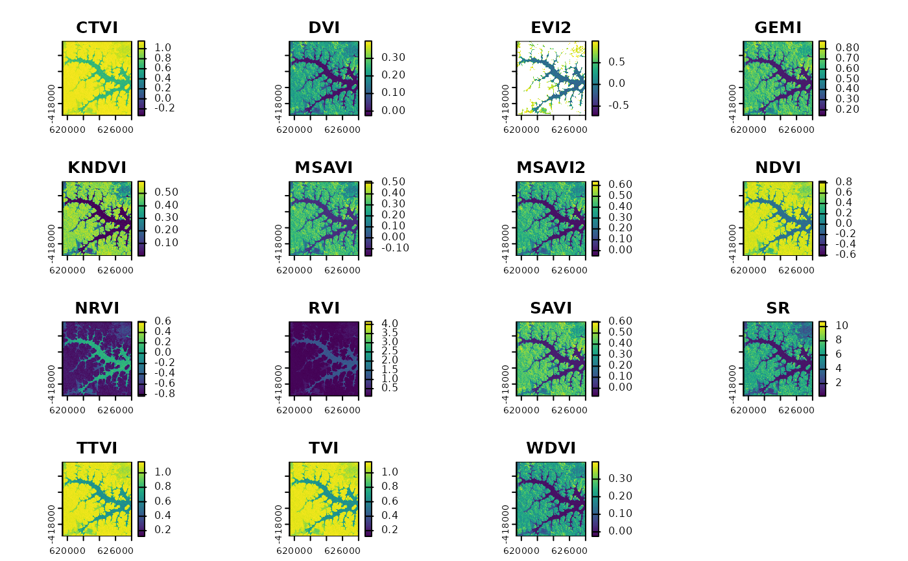
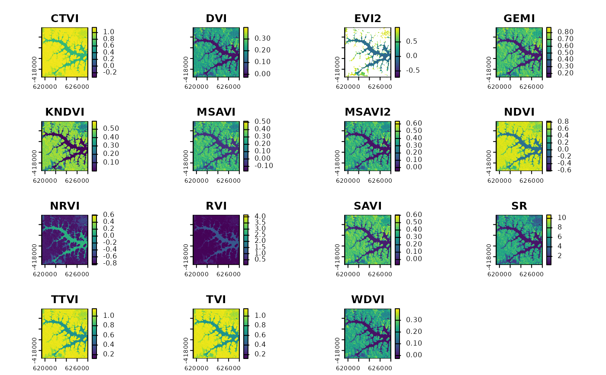

Calculate a suite of multispectral indices such as NDVI, SAVI etc. in an efficient way via C++.
Usage
spectralIndices(
img,
blue = NULL,
green = NULL,
red = NULL,
nir = NULL,
redEdge1 = NULL,
redEdge2 = NULL,
redEdge3 = NULL,
swir1 = NULL,
swir2 = NULL,
swir3 = NULL,
scaleFactor = 1,
skipRefCheck = FALSE,
indices = NULL,
index = NULL,
maskLayer = NULL,
maskValue = 1,
coefs = list(L = 0.5, G = 2.5, L_evi = 1, C1 = 6, C2 = 7.5, s = 1, swir2ccc = NULL,
swir2coc = NULL),
...
)Arguments
- img
SpatRaster. Typically remote sensing imagery, which is to be classified.
- blue
Character or integer. Blue band.
- green
Character or integer. Green band.
- red
Character or integer. Red band.
- nir
Character or integer. Near-infrared band (700-1100nm).
- redEdge1
Character or integer. Red-edge band (705nm)
- redEdge2
Character or integer. Red-edge band (740nm)
- redEdge3
Character or integer. Red-edge band (783nm)
- swir1
not used
- swir2
Character or integer. Short-wave-infrared band (1400-1800nm).
- swir3
Character or integer. Short-wave-infrared band (2000-2500nm).
- scaleFactor
Numeric. Scale factor for the conversion of scaled reflectances to [0,1] value range (applied as reflectance/scaleFactor) Neccesary for calculating EVI/EVI2 with scaled reflectance values.
- skipRefCheck
Logical. When EVI/EVI2 is to be calculated there is a rough heuristic check, whether the data are inside [0,1]+/-0.5 (after applying a potential
scaleFactor). If there are invalid reflectances, e.g. clouds with reflectance > 1 this check will result in a false positive and skip EVI calculation. Use this argument to skip this check in such cases *iff* you are sure the data and scaleFactor are valid.- indices
Character. One or more spectral indices to calculate (see Details). By default (NULL) all implemented indices given the spectral bands which are provided will be calculated.
- index
Character. Alias for
indices.- maskLayer
RasterLayer or SpatRaster containing a mask, e.g. clouds, for which pixels are set to NA. Alternatively a layername or -number can be provided if the mask is part of
img.- maskValue
Integer. Pixel value in
maskLayerwhich should be masked in output, i.e. will be set toNAin all calculated indices.- coefs
List of coefficients (see Details).
- ...
further arguments such as filename etc. passed to writeRaster
Details
spectralIndices calculates all indices in one go in C++, which is more efficient than calculating each index separately (for large rasters).
By default all indices which can be calculated given the specified indices will be calculated. If you don't want all indices, use the indices argument to specify exactly which indices are to be calculated.
See the table bellow for index names and required bands.
Index values outside the valid value ranges (if such a range exists) will be set to NA. For example a pixel with NDVI > 1 will be set to NA.
Examples
library(ggplot2)
library(terra)
## Calculate NDVI
ndvi <- spectralIndices(lsat, red = "B3_dn", nir = "B4_dn", indices = "NDVI")
ndvi
#> class : SpatRaster
#> dimensions : 310, 287, 1 (nrow, ncol, nlyr)
#> resolution : 30, 30 (x, y)
#> extent : 619395, 628005, -419505, -410205 (xmin, xmax, ymin, ymax)
#> coord. ref. : +proj=utm +zone=22 +ellps=WGS84 +towgs84=0,0,0,0,0,0,0 +units=m +no_defs
#> source(s) : memory
#> name : NDVI
#> min value : -0.5789474
#> max value : 0.7629630
ggR(ndvi, geom_raster = TRUE) +
scale_fill_gradientn(colours = c("black", "white"))
 # \donttest{
## Calculate all possible indices, given the provided bands
## Convert DNs to reflectance (required to calculate EVI and EVI2)
mtlFile <- system.file("external/landsat/LT52240631988227CUB02_MTL.txt", package="RStoolbox")
lsat_ref <- radCor(lsat, mtlFile, method = "apref")
#> 09:47:03 | Bands to convert to reflectance: B1_dn, B2_dn, B3_dn, B4_dn, B5_dn, B7_dn
#> 09:47:03 | Thermal bands to convert to brightness temperature: B6_dn
#> 09:47:03 | Processing thermal band(s)
#> 09:47:03 | Processing radiance / reflectance
SI <- spectralIndices(lsat_ref, red = "B3_tre", nir = "B4_tre")
plot(SI)

## Custom Spectral Index Calculation (beta) (supports only bands right now...)
# Get all indices
idxdb <- getOption("RStoolbox.idxdb")
# Customize the RStoolbox index-database and overwrite the option
cdb <- c(idxdb, CUSTOM = list( list(c("Mueller2024", "Super custom index"),
function(blue, red) {blue + red})))
rsOpts(idxdb = cdb)
# Calculate the custom index, (also together with the provided ones)
custom_ind <- spectralIndices(lsat, blue = 1, red = 3, nir = 4, indices = c("NDVI", "CUSTOM"))
# }
# \donttest{
## Calculate all possible indices, given the provided bands
## Convert DNs to reflectance (required to calculate EVI and EVI2)
mtlFile <- system.file("external/landsat/LT52240631988227CUB02_MTL.txt", package="RStoolbox")
lsat_ref <- radCor(lsat, mtlFile, method = "apref")
#> 09:47:03 | Bands to convert to reflectance: B1_dn, B2_dn, B3_dn, B4_dn, B5_dn, B7_dn
#> 09:47:03 | Thermal bands to convert to brightness temperature: B6_dn
#> 09:47:03 | Processing thermal band(s)
#> 09:47:03 | Processing radiance / reflectance
SI <- spectralIndices(lsat_ref, red = "B3_tre", nir = "B4_tre")
plot(SI)

## Custom Spectral Index Calculation (beta) (supports only bands right now...)
# Get all indices
idxdb <- getOption("RStoolbox.idxdb")
# Customize the RStoolbox index-database and overwrite the option
cdb <- c(idxdb, CUSTOM = list( list(c("Mueller2024", "Super custom index"),
function(blue, red) {blue + red})))
rsOpts(idxdb = cdb)
# Calculate the custom index, (also together with the provided ones)
custom_ind <- spectralIndices(lsat, blue = 1, red = 3, nir = 4, indices = c("NDVI", "CUSTOM"))
# }